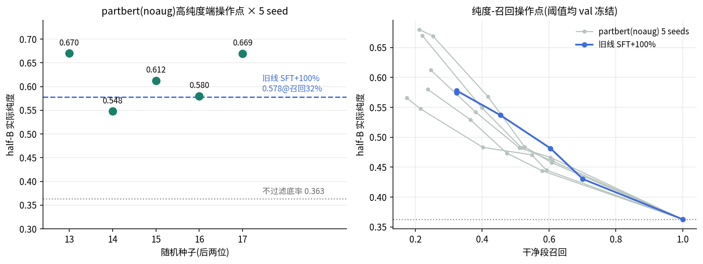

Generated from Markdown source: report/G1_MotionGPT/2026-08-13-partbert-part-token-judge-halfb-eval.md
G1 MotionGPT 判定线 — 部位分解主干(partbert)与增广的 half-B 评测
Preliminary。把判定主干从"预训练 Flan-T5 + 全身码字"换成"从零双向 encoder + 上/下肢双流 部位码字",连同四类 BABEL 增广一起,在 885 段零接触 half-B 考卷上与旧线头对头;全链一晚完成 (①部位分词器 → 增广物理体检 → ②掩码预训练 ×3 增广臂 → ③判定微调 ×5 臂 + 5 seed 复验)。
Conclusion
FAIL(预注册主判据;user 裁定回默认线)
- 预注册主判据"half-B 召回 ≥30% 处纯度 > 0.578(旧线 SFT+100% 最好操作点)"——五条判定臂全部未达,最好为 noaug 臂 0.549@39.9%(主表)。
- noaug 臂高纯度端首抽 0.670@22.1% 是 5 seed 里最好的一抽;5-seed 分布 min 0.548 / 中位 0.612 / max 0.670,与旧线 0.578@32.4% 在单 seed 方差内不分胜负,召回还更低。
- 稳定的增量只有一项:合成并发窗口检出率 0.96–0.98(5 seed 全部稳定)——token 层部位混搭的假动作能被可靠识破,但该能力未转化为真实考卷的纯度。
- ②预训练里加增广(变速/镜像)反而拉低下游判定(0.600/0.585 vs 无增广 0.670,单 seed);增广物理体检本身四类全过门。user 据此裁定:回到 MotionGPT + 离散全身码字默认线,架构轴暂停,等 160 段细粒度标注摊开病理再动。
Problem and terminology
研究问题:把动作表示按上/下肢拆成双流部位码字、主干换成从零 BERT 式双向 encoder,能否让 "给定标签 → pass/fail"的判定在 half-B 考卷上超过旧线?
| Term | 本文 operational definition | 勿混淆 |
|---|---|---|
| 部位分词器 | 两个 VQ-VAE:下肢流 60 维(root+腿腰 DOF+速度+躯干下连杆+足接触)、上肢流 46 维(手臂 DOF+速度+肩肘腕连杆),各 512 码本、0.2 s/码字 | 全身分词器(106 维单流)是旧线部件 |
| partbert | 从零训练的双向 encoder,12L×512×8h(38.9 M)+ 4 register token;判定时加声称类别嵌入 token,register 位池化出 2 类 | 无任何语言预训练;判定不经过文本 |
| 判定模型(旧线) | Flan-T5-Base + 全身码字,SFT+100% 配方(val 2,872 + half-A 887 段级标签涂窗) | 本文对照基线,0.578@32.4% |
| half-B 考卷 | train split 按 entry 组级对半(seed 20260812)的 885 段,任何训练/阈值搜索零接触 | half-A(887)在监督池内 |
| 纯度门槛 / 实际纯度 | 阈值只在 val 上按纯度要求搜索并冻结;half-B 上"留下的段里真干净比例"为实际纯度 | 实际纯度不是在 half-B 上调出来的 |
| 合成并发负例 | 训练时现场合成:干净窗 A 下肢流 + 异类干净窗 B 上肢流(20%)/前 A 后 B 拼接(10%),标 fail;材料仅监督池 clean 段 | 检出率评测用 val 材料现场新合成 500 窗 |
| 增广物理体检 | 增广参考过 SONIC rollout,判据=各指标中位数 ∈ 未增广 p5,p95 | 运动学检查不算体检;见 Method |
Method
Results profile:dataset-verifier(判定评测纯离线;增广体检含 SONIC 物理 rollout,代表性视频见 Results)。
| 项 | 设置 |
|---|---|
| ①部位分词器 | train_tokenizer 配方逐项沿用 + bf16;各 150k 步(~19 min/个) |
| 增广体检 | 20 条 train-split 基准 clip × 6 组(orig/0.4×/0.7×变速/拼接/部位混搭/镜像)过 SONIC;镜像实现为构造式(关节名配对+随机姿态 FK 符号精修),整轨 FK 自检 1.0e-5 m ≤ 1e-4 契约 |
| ②掩码预训练 | span 完形填空(80/10/10,25%)+ 跨部位半窗掩码(30%);Muon(blocks 2D)+AdamW;muon-lr 0.02 发散后降 0.008;40k 步/臂,best-ckpt 按 val 掩码准确率 |
| ③判定微调 | 监督池/窗口协议/阈值纪律与旧线逐字一致;3,000 步;归因臂=跳过②/去合成负例;noaug 臂加 4 个复验 seed |
| 预注册判据 | 主:half-B 召回≥30% 处纯度 > 0.578;副:合成并发窗口检出率 |
Run Spec 状态与对抗预检
spec 于 2026-08-13/14 在对话中逐项确认(含 user 修正案:增广必须过 SONIC 物理体检),原文
嵌入各 evidence.json(logs/g1_motiongpt/partbert_*/、outputs/probe_partbert_aug_validity/)。
训练前 sonnet workflow 对抗预检 7 agents:确认 1 条(evidence 字段错位,已修)、驳回 2 条但采纳
其建议(短流丢弃改 PAD 保留、half-B 覆盖断言);预检期间另修 3 条真 bug(基线曲线键序反转、
smoke 覆盖正式产物、亚 0.2 s 降权死代码)。
Results
主表(half-B,阈值 val 冻结;对照=旧线 SFT+100%):
| 臂 | 高纯度端 | 召回≥30% 处 | 合成并发检出率 |
|---|---|---|---|
| noaug(②无增广) | 0.670 @22.1%(n=106) | 0.549 @39.9% | 0.974 |
| speed | 0.600 @21.5% | 0.508 @41.7% | 0.982 |
| mirror | 0.585 @19.3% | 0.507 @35.2% | 0.980 |
| nopre(跳过②) | 0.596 @18.4% | 0.518 @35.2% | 0.970 |
| speed_nosyn(去合成负例) | 0.508 @31.2% | 0.449 @64.2% | 0.344 |
| 旧线 SFT+100%(对照) | 0.578 @32.4% | — | — |
noaug 高纯度端 5-seed 复验:0.670 / 0.548 / 0.612 / 0.580 / 0.669(中位 0.612)。

增广物理体检(20 基准 clip/组,预注册判据全过;对照带宽与带内偏移如实记录):
| 组 | 摔倒 | 踝高频比中位 | 判据(中位∈orig [p5,p95]) |
|---|---|---|---|
| orig(对照) | 7/20 | 6.22 | —(带宽:hf 踝 p95=49.8) |
| speed 0.4×/0.7× | 9/20 | 12.1 / 9.9 | PASS(带内偏移方向一致) |
| 拼接 / 部位混搭 | 8/20 / 6/20 | 6.0 / 5.8 | PASS |
| 镜像 | 5/20 | 7.8 | PASS(最接近对照) |
代表性 rollout(左=参考运动学回放,右=SONIC 执行;provenance sidecar 同目录):
上游:部位分词器 val 重建 下肢 0.2763 / 上肢 0.2548(全身版 0.3106),码本 508/497 每 512; ②三臂 best val 掩码准确率全部峰值于 2k 步(span 0.282–0.299)。
Analysis
draft(agent 草稿,待 user 审阅定稿)
- ②预训练价值 +7 纯度点@~20% 召回(noaug 0.670 vs nopre 0.596,单 seed,在 seed 带内)
待验证。 - 增广方向为负:变速/镜像提高完形填空准确率却拉低下游判定;与"预训练目标与判定目标不对齐"一致
待验证。 - 合成并发"学得会、不迁移"(0.97 检出 vs half-B 无增益):token 层拼接分布与真实并发脏不同源的解释与后续边界回拨实验相容
待验证。 - 两条线在 ~0.6 纯度汇合,与 FP 人工审查的"不可见脏"桶(全 pass 段仍 42–52% 脏)一致——剩余脏对窗口读数不可见,非主干选择所能解。
Appendix
头条数字代入式与证据路径
0.670 = 71/106:noaug seed 20260813,val 冻结阈值(全窗 pass)下 half-B 留 106 段,人工 标注真干净 71 段;召回 71/321=22.1%(half-B 真干净共 321 段,底率 321/885=0.363)。
检出率 0.974 = 487/500:val clean 材料现场合成 500 个部位混搭窗,判 fail 487 个。
5-seed 中位 0.612:{0.548, 0.580, 0.612, 0.669, 0.670} 的中位数。
evidence:logs/g1_motiongpt/partbert_pretrain_{speed,mirror,none}/、
logs/g1_motiongpt/partbert_judge*/(5+4 目录)、outputs/probe_partbert_aug_validity/evidence_full.json、
镜像自检 src/G1_Motion_GPT/mirror_g1.py(uv run python src/G1_Motion_GPT/mirror_g1.py 复验)。
渲染:outputs/probe_partbert_aug_validity/render/ + sidecar。
复现命令:uv run python src/G1_Motion_GPT/train_part_tokenizers.py →
scripts/probe_partbert_augmentation_validity.py → src/G1_Motion_GPT/encode_part_tokens.py →
train_partbert_pretrain.py --aug {none,speed,mirror} → train_partbert_judge.py [--no-pretrain|--no-synthetic|--seed N]。